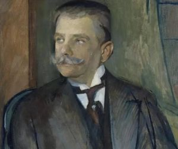
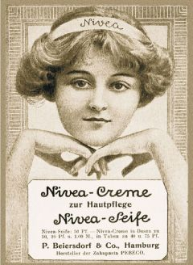

Dr Oskar Troplowitz urodzony 18 stycznia 1863 w
Gliwicach był farmaceutą i właścicielem firmy Beiersdorf, który we współpracy z
innymi naukowcami stworzył kultowy Krem NIVEA.
W 1870 r. Oskar Troplowitz przeprowadził się wraz z rodziną do Wrocławia.
W mieście tym Oscar uczęszczał do szkoły podstawowej i do gimnazjum Marii Magdaleny.
Jako dalszy kierunek nauki chciał wybrać historię sztuki, jednak rodzina zdecydowała o bardziej praktycznym zawodzie aptekarza,
zgodnie z zawodem jego wuja Gustawa Mankiewicza właściciela apteki w Poznaniu.
W latach 1878–1881 odbył trzyletnią naukę i praktykę we wrocławskiej aptece przy Schweidnitzerstrasse
po czym pracował jako asystent w aptekach w Berlinie i Poznaniu. W latach 1884-1886 studiował farmację na uniwersytecie we Wrocławiu,
kończąc naukę egzaminami państwowymi.
Po odbyciu rocznej służby wojskowej został w 1889 r. został
współpracownikiem w aptece swego wuja doktora Gustawa Mankiewicza w Hof-Apotheke w Poznaniu,
zaręczając się jednocześnie z jego córką Gertrudą Mankiewicz.
W maju 1890 r. Troplowitz postanowił spróbować swych sił w przejęciu i prowadzeniu samodzielnego przedsiębiorstwa i zakupił
labolattorium wyrobów chemiczno-farmaceutycznych C.P. Beiersdorfa w Altonie koło Hamburga a następnie przekształcił nazwę firmy na P. Beiersdorf & Co.

Oscar Troplowitz dzięki swym innowacyjnym pomysłom i wiedzy chemicznej doprowadził swoją firmę
do ogromnego rozwoju: w 1890 r. zatrudnionych było 11 osób, a w 1914 r. było to już ponad 500 osób.
Był niezwykłym przedsiębiorcą z dalekowzrocznymi planami.
Z małego laboratorium rozwinął firmę produkującą innowacyjne wyroby, rozprowadzane na cały świat.
Najbardziej znane i doniosłe stało się wynalezienie w grudniu 1911 r. i wdrożenie do produkcji kremu Nivea,
czyli pierwszego kosmetycznego kremu produkowanego na skalę przemysłową. W latach wcześniejszych kremy,
robione w aptekach wyłącznie na zamówienie, były krótkotrwałe i szybko ulegały rozwarstwieniu.
Były to tłuste, żółtawe, szybko jełczejące mazie.
Praca nad nowym kremem trwała długo i zakończyła się sukcesem dopiero wtedy,
gdy zastosowano euceryt, emulgator uzyskiwany z tłuszczu wełny owczej, który umożliwił produkcję stabilnej emulsji tłuszcz-woda.
Wynalazcą eucerytu był chemik dr Isaac Lifschütz, od którego Troplowitz odkupił w 1911 r. patent
Troplowitz był przedsiębiorcą niezwykle, jak na owe czasy, dbającym o swych pracowników: Robotnikom ograniczył w 1892 r.
czas pracy do 60 godzin tygodniowo (a do 1912 r. – zredukował go do 48 godzin tygodniowo), zachowując pełne wynagrodzenie i płatne urlopy.
Otrzymywali oni też bezpłatne posiłki w fabryce oraz premie na Boże Narodzenie. Szczególna opieką otaczał kobiety ciężarne i młode matki.
W 1916 r. w swym majątku w Holsztynie urządził ośrodek wypoczynkowy dla pracowników swojej firmy.

Wykorzystując stabilną sytuację firmy i własną niezależność finansową Troplowitz powrócił do swych młodzieńczych pasji – sztuki.
Nawiązał kontakt z wieloma artystami czynnymi w początkach XX w.: malarzami, grafikami i rzeźbiarzami, wspierając głównie młodych twórców.
Dla miasta Hamburga ufundował rzeźbę – pomnik Diany.
Swym rodzinnym Gliwicom podarował pomnik przedstawiający robotnika z młotem.
Dzieło to zniknęło w 1945 r. i zostało zastąpione obeliskiem ku czci Armii Czerwonej.
Oscar Troplowitz zmarł 27 kwietnia 1918 roku na udar mózgu. Został pochowany w rodzinnym grobowcu przy głównej alei wielkiego cmentarza Ohlsdorf w Hamburgu.